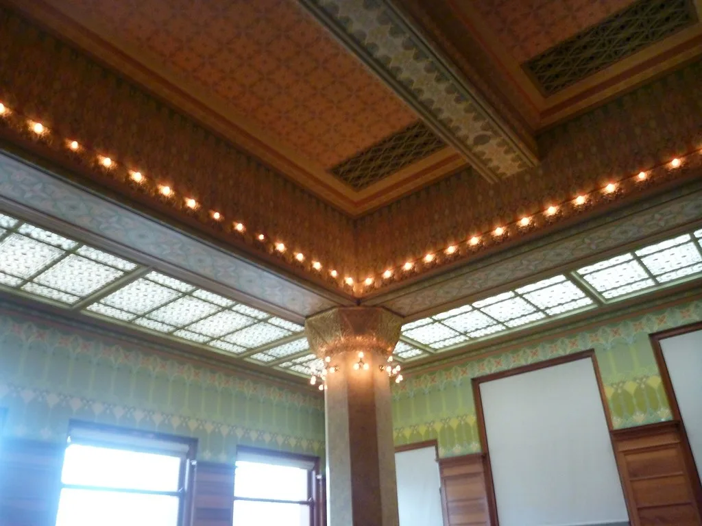

코스피 매수 사이드카 발동…외국인 1.4조 순매수에 6600선 안착
코스피가 5일 반도체 대형주를 앞세워 급등하며 6600선에 안착했다. 코스피는 전 거래일보다 3.76% 오른 6598.26에 장을 마쳤다. 개장 직후부터 상승폭을 키우며 오전 9시 24분경에는 지수가 전장 대비 261.53포인트(4.11%) 오른 6620.48까지 치솟았고, 이 과정에서 코스피 시장에서 올해 들어 23번째 매수 사이드카가 발동됐다. 매수 사이드카는 선물 가격이 일정 수준 이상 급등한 상태가 1분 이상 지속될 때 프로그램 매매 호가 효력을 일시 정지시키는 제도로, 그만큼 이날 시장의 상승 탄력이 예사롭지 않았다는 의미로 풀이된다.
이날 급등을 이끈 것은 단연 반도체 대형주였다. 삼성전자는 2.50% 오른 24만6000원, SK하이닉스는 5.77% 오른 166만8000원에 각각 거래를 마치며 지수 상승을 견인했다. 간밤 뉴욕 증시에서 반도체를 비롯한 인공지능(AI) 관련 종목들이 일제히 강세를 보인 흐름이 국내 증시로 고스란히 이어졌다는 분석이다. 여기에 중동 지정학적 긴장이 완화될 조짐을 보이면서 국제유가가 하락, 투자 심리를 한층 개선시킨 것으로 풀이된다. 반도체 소재·부품·장비 관련주들도 대형주 강세에 동반 상승하는 모습을 보였다.

수급 측면에서는 외국인 매수세가 두드러졌다. 유가증권시장에서 외국인 투자자는 1조4460억원 안팎을 순매수하며 지수를 밀어올리는 주역이 됐다. 기관 투자자도 1000억원대 순매수에 동참했다. 반면 개인 투자자는 1조원대 후반 규모의 순매도를 기록해, 외국인·기관과 개인 사이의 매매 동향이 엇갈리는 모습을 보였다. 통상 급등장에서 개인이 차익 실현에 나서고 외국인이 매수 우위를 보이는 패턴이 이번에도 재현된 셈이다.
코스닥 지수도 동반 강세를 나타내며 2%대 상승률을 기록했다. 반도체 업황 회복 기대감이 대형주뿐 아니라 관련 중소형주 전반으로 확산된 결과로 풀이된다. 앞서 SK하이닉스가 샌디스크와 함께 차세대 스토리지 규격인 HBF(High Bandwidth Flash)의 첫 표준을 공개하는 등 국내 메모리 업체들의 기술 경쟁력을 재확인시키는 소식이 이어진 점도 투자 심리에 우호적으로 작용했다는 평가다. 다만 이날 상승은 단기간에 낙폭을 만회하는 과정에서 나온 반등의 성격이 짙다는 신중론도 함께 나온다.

시장에서는 이번 반등이 추세적 상승으로 이어질지, 아니면 일시적 되돌림에 그칠지를 두고 시각이 엇갈린다. AI·반도체 업황 개선 기대와 중동 리스크 완화라는 두 가지 우호적 재료가 동시에 맞물린 결과라는 점에서 긍정적으로 보는 시각이 있는 반면, 개인 투자자의 대규모 매도 물량이 향후 추가 상승의 부담 요인이 될 수 있다는 지적도 있다. 환율 등 다른 거시 변수의 움직임도 함께 지켜봐야 한다는 목소리가 나온다.
증권가에서는 당분간 국내 증시가 미국 반도체·AI 관련주 흐름과 중동발 지정학적 뉴스에 연동돼 움직일 가능성이 크다고 보고 있다. 호르무즈 해협을 둘러싼 이란과 오만, 미국 간 협상이 실제 타결로 이어질 경우 유가 안정과 함께 투자 심리에 추가 호재로 작용할 수 있다는 전망도 나온다. 다만 급등에 따른 단기 과열 우려도 상존하는 만큼, 시장에서는 이번 주 후반까지 변동성 장세가 이어질 가능성에 대비하는 분위기다.